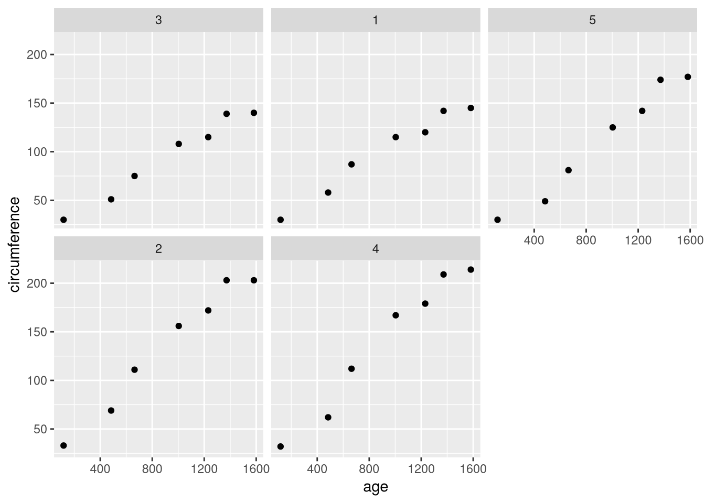

library("ggplot2")
ggplot(Orange) +
aes(x = age, y = circumference) +
geom_point() +
facet_wrap(~ Tree)
After this lesson, you should be able to:
This chapter uses the following R packages:
For a refresher about how to install and load packages, see the Packages section of DataLab’s R Basics workshop reader.
This chapter introduces hierarchical models, multi-part linear models which are a fundamental tool for modeling repeated measures data. Along the way, we explain a few of the ideas that underpin these models.
Datasets often contain features that we can use to group the observations. For instance, a dataset where the subjects are people might include features such as city of residence, educational attainment, and marriage status. If one of these features (or one of the subpopulations they characterize) is important to our analysis goals, we’ll likely use the feature to group the observations during analysis.
Repeated measures datasets present another case where there are features we can use to group observations. Because the measurements for each subject are repeated, we might want to group observations by subject (or by time of measurement).
In the Orange Tree Growth dataset (Section 10.3), each tree has a unique ID number. We can use this to plot the observations for each tree separately:
library("ggplot2")
ggplot(Orange) +
aes(x = age, y = circumference) +
geom_point() +
facet_wrap(~ Tree)
If we want to compute a statistic on a dataset with groups, two strategies we might consider are:
Compute a separate estimate for each group. This is a no pooling strategy, because we never pool the groups.
Compute one estimate, ignoring the groups. This is a complete pooling strategy, because we combine—or pool—all of the groups.
The no pooling strategy has the obvious advantage that it reveals details about the groups that we would otherwise miss with the complete pooling strategy. On the other hand, the complete pooling strategy also has an advantage: even if the number observations in some groups is small, by pooling them we’ll likely have enough observations to get an accurate estimate.
As an extreme case, consider what happens if some of the groups have only one observation. The estimates for these groups will likely be poor, because they depend entirely on sampling of a single observations. As an even more extreme case, if some groups are empty (no observations), then we can’t compute an estimate at all.
We can use a third strategy, partial pooling, to improve on the other two. The idea is to compute the no pooling estimates (for groups with observations) and the complete pooling estimate, then take the a weighted average (or linear interpolation) of the two. The average is weighted with the sample size and precision (inverse variance) of each estimate, so that:
In other words, partial pooling shares information between groups, while still providing a separate estimate for each one. It also allows us to compute estimates for groups with only zero or one observation.
Partial pooling is useful when working with repeated measures datasets because sometimes a measurement might be missing. It also leads to more accurate estimates even when all of the observations are there.
We can reap the benefits of partial pooling in a linear modeling context by using a hierarchical model. Hierarchical models are also known as multilevel models and linear mixed effect models (LMMs). They’re called hierarchical models because partial pooling is equivalent to fitting a hierarchy of models: one at the dataset level and one or more at the group level.
As a brief demonstration of how to fit a hierarchical model, let’s fit models with no pooling, complete pooling, and partial pooling. We’ll use the Orange Tree Growth dataset, with circumference as the outcome and age as a predictor. When we group the observations, we’ll group by tree.
Let’s start with the complete pooling strategy. We’ll fit a single model, ignoring the groups entirely:
# Complete pooling:
fit_compl = lm(circumference ~ age, orange)
summary(fit_compl)
Call:
lm(formula = circumference ~ age, data = orange)
Residuals:
Min 1Q Median 3Q Max
-46.310 -14.946 -0.076 19.697 45.111
Coefficients:
Estimate Std. Error t value Pr(>|t|)
(Intercept) 17.399650 8.622660 2.018 0.0518 .
age 0.106770 0.008277 12.900 1.93e-14 ***
---
Signif. codes: 0 '***' 0.001 '**' 0.01 '*' 0.05 '.' 0.1 ' ' 1
Residual standard error: 23.74 on 33 degrees of freedom
Multiple R-squared: 0.8345, Adjusted R-squared: 0.8295
F-statistic: 166.4 on 1 and 33 DF, p-value: 1.931e-14There’s only one intercept in this model, computed based on all of the observations.
Next, let’s try the no pooling strategy. For this, we’ll fit the model with a separate intercept for each tree. To do so, we can add -1 in the model formula to remove the pooled intercept:
# No pooling:
fit_no = lm(circumference ~ age + Tree - 1, orange)
summary(fit_no)
Call:
lm(formula = circumference ~ age + Tree - 1, data = orange)
Residuals:
Min 1Q Median 3Q Max
-30.505 -8.790 3.737 7.650 21.859
Coefficients:
Estimate Std. Error t value Pr(>|t|)
age 0.106770 0.005321 20.066 < 2e-16 ***
Tree3 -4.457493 7.572732 -0.589 0.561
Tree1 1.113936 7.572732 0.147 0.884
Tree5 12.685365 7.572732 1.675 0.105
Tree2 36.828222 7.572732 4.863 3.71e-05 ***
Tree4 40.828222 7.572732 5.391 8.55e-06 ***
---
Signif. codes: 0 '***' 0.001 '**' 0.01 '*' 0.05 '.' 0.1 ' ' 1
Residual standard error: 15.26 on 29 degrees of freedom
Multiple R-squared: 0.9884, Adjusted R-squared: 0.986
F-statistic: 411.8 on 6 and 29 DF, p-value: < 2.2e-16Finally, let’s try the partial pooling strategy. The [lme4][] package is one of several packages we can use to fit a hierarchical model in R. We’ll use its lmer function, which is a lot like the lm function. In the model formula, we’ll add the groups as (1 | Tree). This is lme4’s notation for partially pooled intercept (another name for this is a random effect):
# Partial pooling:
library("lme4")Loading required package: Matrixfit_part = lmer(circumference ~ age + (1 | Tree) - 1, orange)
summary(fit_part)Linear mixed model fit by REML ['lmerMod']
Formula: circumference ~ age + (1 | Tree) - 1
Data: orange
REML criterion at convergence: 312.3
Scaled residuals:
Min 1Q Median 3Q Max
-1.7854 -0.6187 0.2962 0.5533 1.5732
Random effects:
Groups Name Variance Std.Dev.
Tree (Intercept) 529.7 23.02
Residual 234.6 15.32
Number of obs: 35, groups: Tree, 5
Fixed effects:
Estimate Std. Error t value
age 0.110113 0.004845 22.73The residual standard deviation for the partial pooling model is only slightly higher than it is for the no pooling model, and we get the benefits of partial pooling.
The example in this section only shows the simplest way to use a hierachical model. There are many other ways to use them, such as computing partially pooled slopes, that are useful for all kinds of grouped datasets.
The blog post Partial Pooling in Mixed-Effects Models (Mahr 2017) gives a nice demonstration of partial pooling with visual examples.
DataLab’s A Practical Introduction to Regression Modeling in R workshop reader includes a longer introduction to hierarchical models.
The textbook Data Analysis Using Regression and Multilevel/Hierarchical Models (Gelman and Hill 2007) provides a thorough introduction to hierarchical models.
Hierarchical models are closely associated with Bayesian statistics; for an introduction to Bayesian statistics, see the textbook Statistical Rethinking (McElreath 2020).